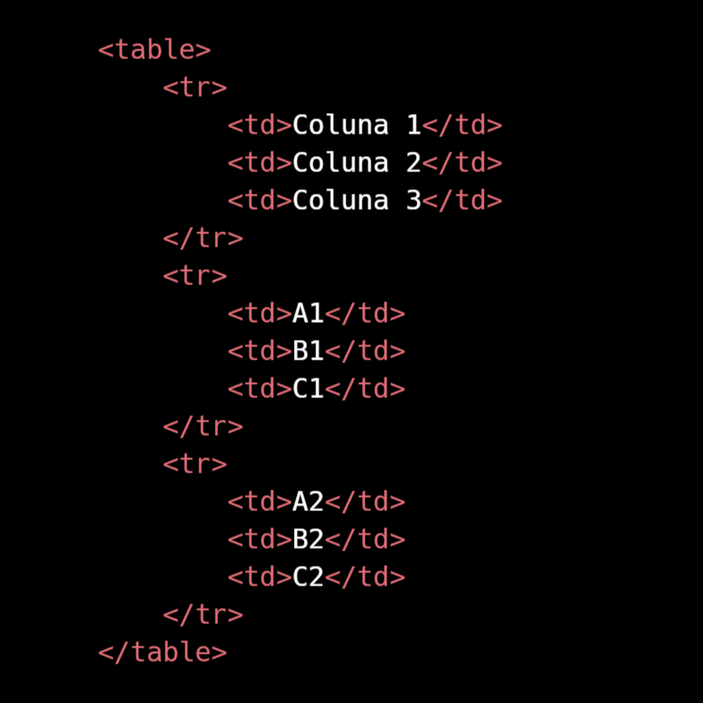
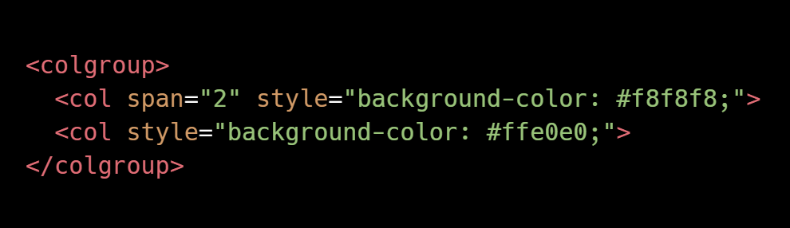

Uma tabela é uma maneira de organizar dados em linhas e colunas. No HTML, usamos a tag <table> para criar uma tabela. Dentro dela, usamos <tr> para definir uma linha, <th> para definir um cabeçalho de coluna e <td> para definir o conteúdo de uma célula.
Aqui está um exemplo de uma tabela simples com duas linhas e três colunas:

Como resultado:
Coluna 1
Coluna 2
Coluna 3
A1
B1
C1
A2
B2
C2
Você pode adicionar mais linhas e colunas conforme necessário, usando mais <tr> para novas linhas e mais <td> dentro de cada linha para novas células de dados.
Além disso, você pode estilizar a tabela usando CSS para torná-la mais atraente visualmente. Por exemplo, você pode adicionar bordas, espaçamento e cores de fundo às células.
Uma propriedade importante no CSS com relação a tabelas é a propriedade border-collapse: collapse; que faz com que as linhas se unifiquem, retirando a margin das células da tabelas.
Outra propriedade importante no CSS com relação a tabelas é a propriedade vertical-align que faz com que o conteúdo se alinhe verticalmente, usando os valores: bottom, middle e top.
Anatomia para Tabelas Grandes
Para tabelas maiores, é importante organizar os dados de forma clara e legível. Aqui estão algumas dicas para criar tabelas grandes:
<table> - Para criar a tabela.
<caption> - Para dar um título para a tabela.
<thead> - Para criar um cabeçalho para a tabela, podendo conter tags como <th>, <tr> e <td>.
<tbody> - Para criar o corpo do conteúdo da tabela, podendo conter tags como <th>, <tr> e <td>.
<tfooter> - Para criar o rodapé da tabela, podendo conter tags como <th>, <tr> e <td>.
Scope
O atributo scope serve para ajudar leitores de tela a entender o que cada célula significa. Indica se o <th> se refere a uma linha ou coluna.
O <th scope="row"> nas linhas indica que aquela célula representa aquela linha específica. Isso torna a navegação por voz mais precisa para pessoas com deficiência visual.
Temos quatro tipos de scopes que são:
scope="row" Para indicar que os dados vão seguir a linha.
scope="col" Para indicar que os dados vão seguir a coluna.
scope="rowgroup" Para indicar que os dados a seguir terão conteúdo em mais de uma linha.
scope="colgroup" Para indicar que os dados a seguir terão conteúdo em mais de uma coluna.
Efeito Zebrado
O efeito zebrado é uma técnica de design que alterna as cores de fundo das linhas de uma tabela para melhorar a legibilidade. Isso ajuda os usuários a seguir visualmente as linhas da tabela, especialmente quando há muitas colunas ou dados.
Para implementar o efeito zebrado, você pode usar CSS para aplicar cores de fundo diferentes às linhas pares e ímpares da tabela. Aqui está um exemplo de como fazer isso:
Neste exemplo, usamos o seletor nth-child para aplicar uma cor de fundo cinza claro #f2f2f2 às linhas pares (even) e branco #ffffff às linhas ímpares (odd). Isso cria um efeito zebrado que torna a tabela mais fácil de ler.
Fixar Título
Fixar o título de uma tabela é uma técnica útil para manter os cabeçalhos visíveis enquanto os usuários rolam para baixo em tabelas longas. Isso é especialmente importante quando a tabela contém muitas linhas, pois permite que os usuários vejam facilmente a que coluna cada dado pertence.
Para fixar o título de uma tabela, você pode usar CSS para tornar o cabeçalho da tabela fixo no topo da janela de visualização. Aqui está um exemplo de como fazer isso:
Primeiro colocamos o position: relative; na tabela.
thead >tr >th {
position: sticky;
top: 0;
}
Neste exemplo, usamos a propriedade position: sticky na tag <thead> para torná-la fixa no topo da tabela quando o usuário rola para baixo. A propriedade top: 0 garante que o cabeçalho fique no topo da janela de visualização.
Mesclar Células
Mesclar células em uma tabela é uma técnica útil para combinar duas ou mais células adjacentes em uma única célula. Isso é frequentemente usado para criar cabeçalhos que abrangem várias colunas ou para agrupar dados relacionados.
Para mesclar células, você pode usar os atributos colspan e rowspan nas tags <td> ou <th>. O atributo colspan é usado para mesclar células horizontalmente, enquanto o rowspan é usado para mesclar células verticalmente.
Aqui está um exemplo de como mesclar células em uma tabela:
Informações Pessoais
Nome
Lucas
Idade
20
21
Neste exemplo, o cabeçalho da tabela é mesclado horizontalmente usando colspan="2", o que significa que ele abrange duas colunas. Além disso, a primeira célula da terceira linha é mesclada verticalmente usando rowspan="2", o que significa que ela ocupa duas linhas.
Destacar Coluna
Para destacar uma coluna ou controlar a aparência de várias colunas de uma vez só é comum usar a tag <colgroup> e dentro dela usar a tag <col>. A <colgroup> fica logo após a abertura da <table>, e contém uma ou mais tags <col>. Ideal para estilizar colunas completas, sem mexer no conteúdo individual das células.

Neste exemplo por conta do span="2" as duas primeiras colunas ficam cinza claro, enquanto a terceira coluna fica rosa claro.
Lembrando que a tag <col> vai seguir respectivamente a ordem indicada.
Pode aplicar o estilo diretamente como nesse exemplo ou pode atribuir classes e assim estilizar no arquivo CSS.
Responsividade de Tabela
Tornar uma tabela responsiva é essencial para garantir que ela seja legível e utilizável em dispositivos de diferentes tamanhos, como smartphones e tablets. Existem várias abordagens para tornar tabelas responsivas, e aqui estão algumas dicas e técnicas comuns:
Use CSS para definir larguras percentuais em vez de larguras fixas para colunas, permitindo que a tabela se ajuste ao tamanho da tela.
Considere usar a propriedade overflow-x: auto no contêiner da tabela para permitir rolagem horizontal em telas menores.
Use media queries para ajustar o estilo da tabela com base no tamanho da tela. Por exemplo, você pode ocultar colunas menos importantes em telas menores.
Considere transformar a tabela em um layout de cartão em telas pequenas, onde cada linha da tabela é exibida como um cartão separado.